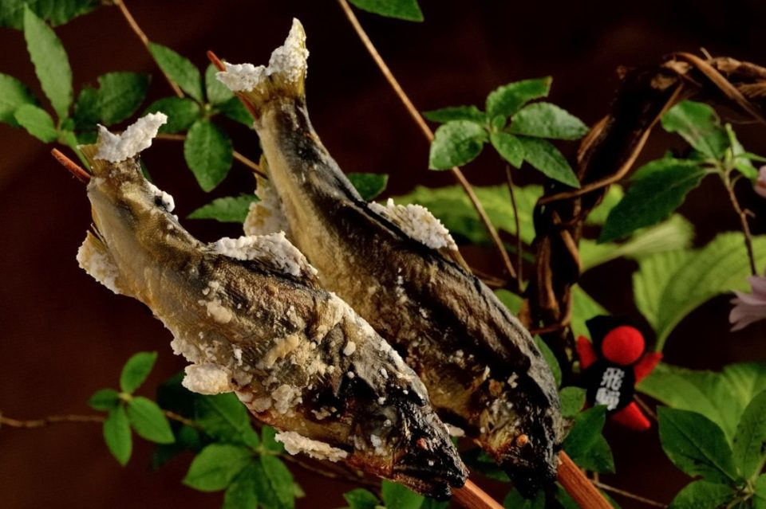
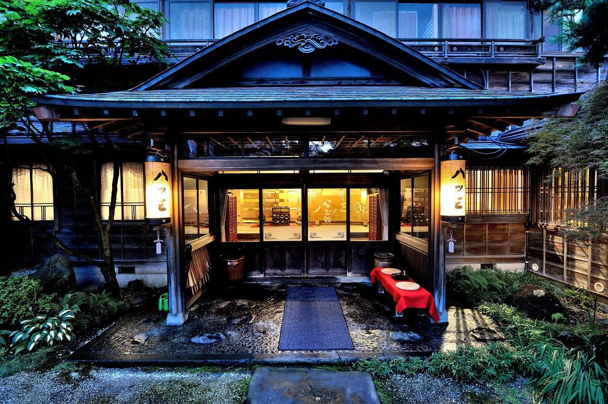
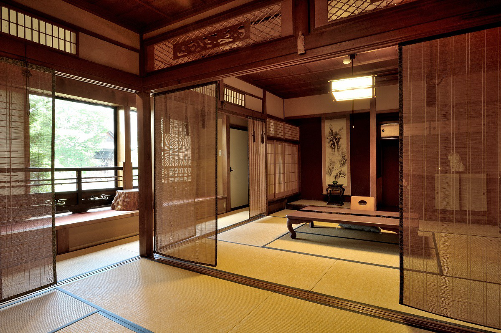
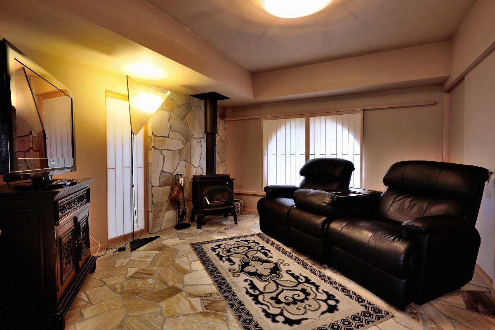
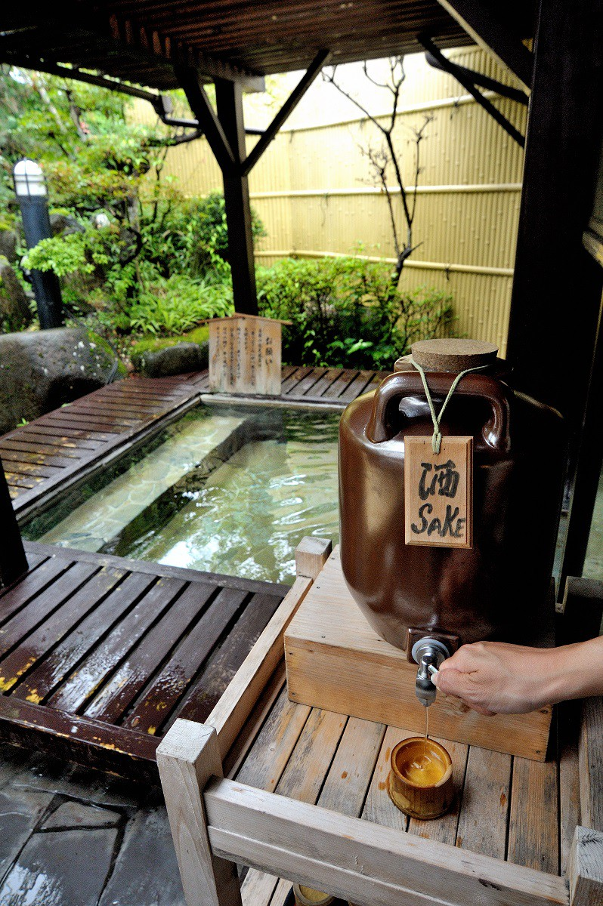
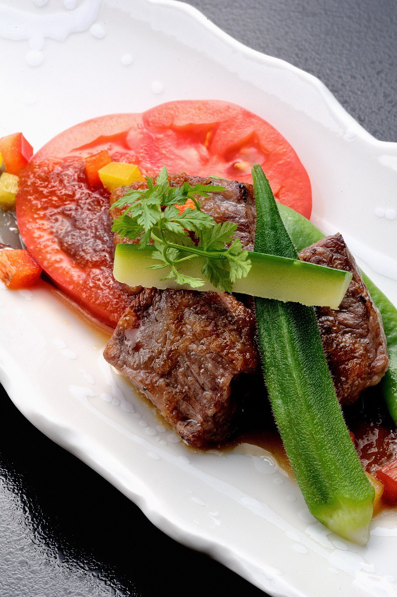

Префектура Гифу · Хида-Фурукава · рёкан
Yatsusankan: старинный рёкан Хида-Фурукавы, где ужинают рыбой аю при свечах

Yatsusankan стоит на берегу реки в Хида-Фурукаве и принимает гостей больше 160 лет. Сюда едут за речной рыбой аю: летом за молодой, осенью за зрелой, которую едят при мерцающем свете японских свечей.
Город
Хида-Фурукава: родина, какой её представляют
Хида-Фурукава, небольшой город на севере префектуры Гифу, кажется японцам воплощением слова «родина». Стоит услышать, что рёкан находится в Хида-Фурукаве, и сразу представляешь, каким он должен быть, и хочется там остановиться. Такой образ родины хорошо знает каждый японец по старой школьной песне «Фурусато»: горы, где гонялись за зайцами, и река, где ловили рыбу.
А раз есть река, значит, есть рыба. Любителю поесть при виде горной реки первой вспоминается аю («сладкая рыба»), небольшая речная рыба с тонким ароматом. Через центр Хида-Фурукавы течёт река Миягава, и, глядя на её чистую воду, трудно поверить, что аю здесь может быть невкусной. Принято считать, что у каждой реки своя рыба и свой вкус. В Хида-Фурукаве к тому же есть рёкан с историей больше ста лет, который славится блюдами из аю.
Дом
Рёкан с историей больше 160 лет
Yatsusankan открылся в годы Ансэй (1854–1860) и стоит у самой реки. Необычное название связано с основателем, который перебрался в Хида из Яцуо, городка в соседней префектуре Тояма. Эти два города и правда похожи: по улицам Хида-Фурукавы тоже бегут каналы с чистой водой, и повсюду слышно её журчание.

Сначала гостей проводят в приёмную. Она построена в 1935 году, и в ней чувствуется дух Рокумэйкана, знаменитого токийского зала приёмов эпохи Мэйдзи, и роскошь тех лет.
Номеров в рёкане 21, и все они разные. Главный корпус восстановили в 1905 году, и он внесён в реестр культурного достояния Японии. Есть и современные номера: один из них устроили в здании начала эпохи Сёва в стиле сукия, лёгкой архитектуры чайных домиков, и при нём ванна на полуоткрытой террасе. Все номера ухожены.


Онсэн
Восемь ванн и сакэ у воды
Особая радость в Yatsusankan это собственный онсэн. Мужских и женских ванн вместе восемь: ванна под открытым небом, крытые ванны с горячим источником и даже ванна с сакэ-касу, рисовым жмыхом, который остаётся после варки сакэ. После дороги приятнее всего начать с открытой ванны среди зелени.

Ужин
Аю и говядина Хида
После ванны наступает долгожданный ужин. Его подают в отдельных комнатах столовой, которые выходят в сад. К комнате ведут огоньки японских свечей, а в саду гостей встречают костры. Ужин проходит в полутьме, как в старинной сказке.
Простая деревенская кухня горного края соседствует здесь с утончёнными блюдами, и есть их одно удовольствие. Особенно хороша говядина Хида: её выращивают тут же, в Хида-Фурукаве. Мясо в меру жирное, и с каждым движением челюстей вкус раскрывается всё сильнее.

Но главное блюдо здесь всё же аю. Сашими из неё пахнет свежестью, а запечённая в соли рыба показывает настоящий вкус дикой аю. В меню есть аю, подвяленная с рисовым кодзи, а в конце ужина рисовая каша дзосуй с аю: речную рыбу Хиды можно попробовать во всех видах. Говядина Хида и дикая аю за одним ужином: такую роскошь может предложить только старинный рёкан Хида-Фурукавы.
Yatsusankan
- Адрес
- префектура Гифу, Хида, Фурукава-тё, Мукаимати, 1-8-27
- Телефон
- +81 577-73-2121
- Номера
- 21; ужин и завтрак японские, в отдельных комнатах столовой; ужин из аю (аю-кайсэки) по предварительному заказу
- Заезд / выезд
- 15:00 / 10:00
- Цены / Вход
- ночь с ужином и завтраком от 20 520 иен с налогом
- Как добраться
- от станции Хида-Фурукава (JR, линия Такаяма) около 8 минут пешком; на машине около 20 минут от съезда Хида-Киёми скоростной дороги Токай-Хокурику
- Сайт
- 823kan.com
Фото: Ко Миядзи.